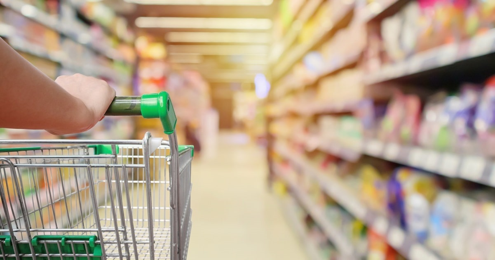

Grocery Stores Thriving Amid the Coronavirus Outbreak
Topics: Coronavirus (COVID-19)
The impact of the COVID-19 outbreak on small businesses has been staggering.All across the county, many businesses have had to reduce their hours and their staff.Some businesses have shut down their operations altogether in an attempt to help stop the spread, seeing huge drop-offs in profits and creating overwhelming uncertainty for their owners and employees.In a survey conducted by Goldman Sachs of 10,000 small businesses, approximately 51% of owners surveyed reported that they would 'only be able to continue to operate for 0-3 months.'
With nearly 30.7 million small businesses in the U.S. employing around 47.3% of the private workforce, the effects of a long term shut down could lead to thousands of these businesses shutting their doors permanently and resulting in massive layoffs for their employees.
But amid the devastating fallout of the COVID-19 crisis, there is at least one industry that has been thriving: grocery stores.
As the daily updates on the virus showed how quickly it was spreading, along with the rumors and announcements of Shelter in Place orders on the horizon, people fled to grocery stores to stock up on nearly everything available.This left behind aisles of empty shelves and owners struggling to keep up the pace to meet both the record level of demand and the shifting purchase habits of consumers.
Nielsen reported that sales of hand sanitizers were up 470% in the first week of March over last year.Disinfectants were up 385%, thermometer and rubbing alcohol sales were up more than 170%.Alternatives to milk saw huge increases, with powdered milk sales up 126% and sales of oat milk up about 350% in March.
The report also showed a dramatic increase in the purchase of first aid kits, hydrogen peroxide, antiseptic, soap, cold medicine and paper towels.Nielsen said consumers first went after pantry canned goods and other shelf-stable foods.
One of the largest (and perhaps most interesting) trends in purchasing was for toilet paper.Although not considered a staple of emergency supplies like milk, bread and eggs, concern grew that we would be forced to stay in our homes for an extended period of time, causing consumers to 'over prepare' for an emergency situation.The result was shortages both in stores and online, ultimately forcing a limit on the number of packs that a single customer could purchase.
The growing concern around risking exposure by going to a crowded superstore has resulted in consumers stopping by smaller markets that are less crowded and more likely to have items in stock, in comparison to larger stores that cannot keep up with demand.
As for larger stores, overall sales increased by double digits for Costco in the fiscal 2020 second quarter.Net sales climbed 10.5% to $38.26 billion from $34.63 billion a year earlier.Amazon is set to hire 100,000 workers in an attempt to meet their online orders, which have surged since the outbreak.
Here’s a quick snapshot from a recent report about the boom for grocery stores:
While the boom has been positive for the grocery store industry, there are still concerns about the long-term impact going forward.
As a sign of appreciation for their workers’ extra effort during this critical time, many stores have been rewarding employees with bonuses and pay increases.The problem is, however, employers will now have to account for those pay raises after the COVID-19 crisis passes and sales figures return to the norm.Profits will inevitably take a hit, leading to additional financial strain and potential employee layoffs.
Pay increases and bonuses certainly help grocery store workers in the short term, but employment is about more than just the paycheck.Will these workers, who have gone above and beyond by putting in extra hours and risking their health to serve their employers, still feel appreciated once the crisis is over?Employers can help ensure their employees feel valued and protected by taking extra precations and following recommended safe practices at work.
Increased E-Commerce
A 2019 Coresight Research report noted that nearly one-third of the 2,500 grocery shoppers surveyed purchased 'almost none' of their groceries online.41% reported making only a 'small amount' of such purchases online.Post COVID-19 outbreak, a research report found that 'one-third of shoppers purchased food online, with a significant share of those (41%) being first-time online food and grocery shoppers.'
This trend may linger beyond the COVID-19 situation.Now that shoppers have experienced the convenience of buying groceries online, they may continue to do so going forward.As a result, this could lead to reduced sales and profits for brick and mortar locations, many of whom heavily rely on in-person transactions.Smaller stores may not be able to invest as much in building out their e-commerce and delivery platforms, leading to missed sales opportunities.
It’s clear the impact of the COVID-19 situation is widespread, especially for small businesses..While we anxiously wait to see what else unfolds during this health emergency, here are five ways to support small businesses during the outbreak.We’ve created a library of resources regarding the coronavirus to help you stay informed, safe and healthy.For more information about our small business insurance solutions, please contact us today.
This material is for informational purposes only.Neither AmTrust Financial Services, Inc.nor any of its subsidiaries or affiliates represents or warrants that the information contained herein is appropriate or suitable for any specific business or legal purpose.Readers seeking resolution of specific questions should consult their business and/or legal advisors.Coverages may vary by location.Contact your local RSM for more information.

Content Date: n/a
Download Date: 2021-05-30
Document ID: L0C04CQFZ